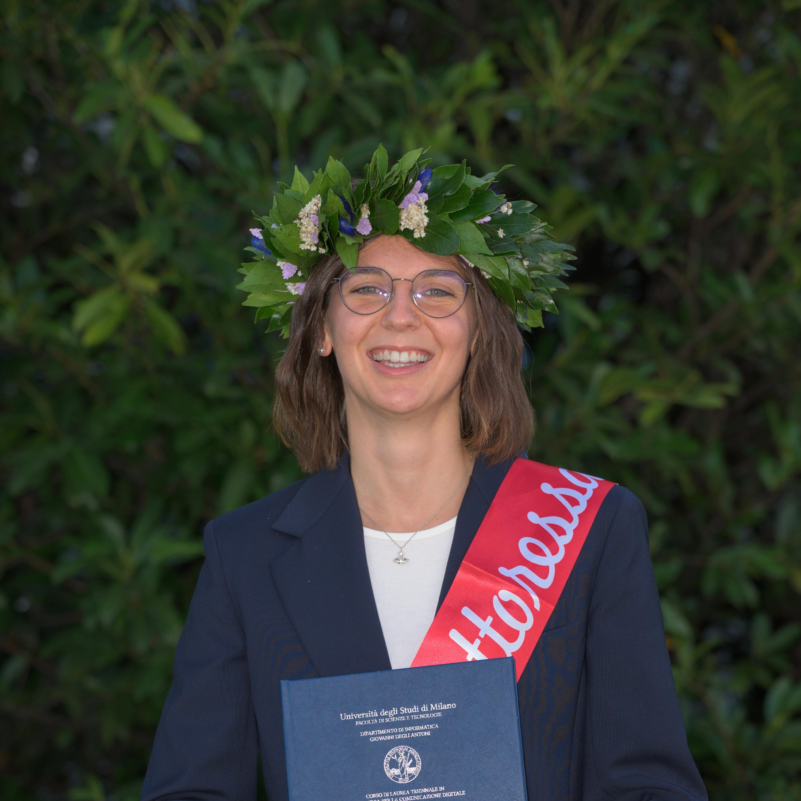

Laurea Magistrale Informatica
Università degli Studi di Milano
Attualmente il percorso di studi si concentra sull’analisi dei dati, sui sistemi multimediali e sui sistemi informativi applicati al contesto aziendale e industriale.
CURRICULUM PERSONALE
Nata nel 2003 a Sondrio (SO)
Cresciuta a Tirano (SO)
Attualmente a Milano (MI)

LA TUA FOTO01 / PROFILO
Mi interessano sia il mondo digitale sia quello creativo.
Diplomata in Sistemi Informativi Aziendali e laureata in Informatica per la comunicazione digitale, attualmente frequento la laurea magistrale in Informatica. Parallelamente, coltivo la passione per la fotografia attraverso progetti ed esperienze pratiche.
02 / STUDI
Università degli Studi di Milano
Attualmente il percorso di studi si concentra sull’analisi dei dati, sui sistemi multimediali e sui sistemi informativi applicati al contesto aziendale e industriale.
Università degli Studi di Milano
Il percorso si è focalizzato sull’acquisizione di competenze in programmazione, sviluppo di siti web e tecnologie digitali.
Istituto Balilla Pinchetti · Tirano (SO)
Indirizzo tecnico economico, articolazione Sistemi Informativi Aziendali. Studio dell'informatica, delle materie economico-aziendali.
Inglese — livello B2 certificato dall’Università.
ECDL Standard — Computer Essentials, Online Essentials, Word Processing, Spreadsheets, Presentation, Online Collaboration e IT Security.
03 / ESPERIENZE
Collaborazioni con piccole attività
Gestisco alcune pagine social, occupandomi della comunicazione digitale e della creazione di contenuti e creazione di siti web vetrina.
Business Information Systems: analisi ed elaborazione di dati, con interpretazione e studio dei risultati. GitHub ↗
Biomedical Signal Processing: manipolazione di dati biomedici ed estrazione di informazioni significative. GitHub ↗
Scientific Visualization: analisi di dati biologici e studio delle correlazioni tra geni e predisposizioni genetiche. GitHub ↗
Cittadinanza Digitale: scraping di dati. GitHub ↗
Progetto di tesi: studio dei segnali del sistema visivo umano e implementazione di un modello di elaborazione delle immagini ispirato ai meccanismi fisiologici della visione. GitHub ↗
Azienda agricola di Tirano (SO) - Valtellina
Attività stagionale di raccolta delle mele, svolta durante le estati dal 2022 al 2026.
Studio Dott. Alessandro Fomasina · Tirano (SO)
Tirocinio di un mese durante il quarto anno delle superiori, dedicato ad attività di registrazione contabile.
Tennis Club Tirano / Valposchiavo (Svizzera)
Attività di insegnamento e affiancamento ai giovani allievi nelle stagioni estive 2019, 2020 e 2021.
04 / COMPETENZE
Linguaggi e tecnologie studiati: Go, Java, Python, HTML, CSS, JavaScript, SQL.
Microsoft Office, WordPress, GitHub e realizzazione di siti web.
Adobe Photoshop, Adobe Lightroom, Da Vinci, fotografia e gestione dei social media.
05 / PASSIONI
Ho frequentato corsi di fotografia. Adoro fotografare paesaggi e animali e ho realizzato servizi fotografici per eventi e un portfolio personale online.